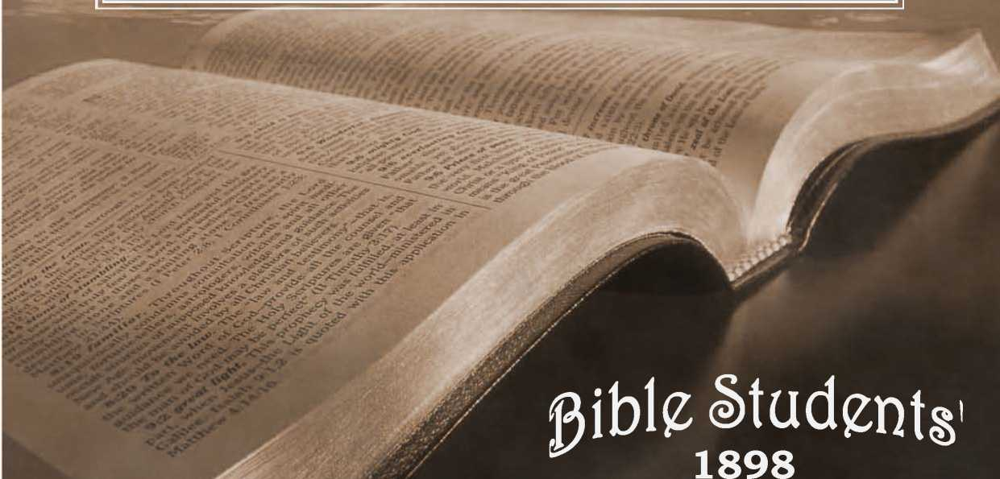
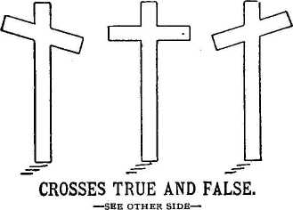
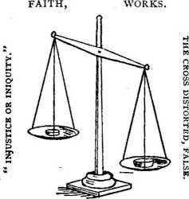
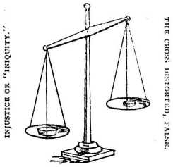

No. 42—Crosses True and False. Crucified With Christ
OLD THEOLOGY QUARTERLY. No. 42.—JUL F, 1898.
Entered as Second-Class Mail Matter at the P.O., Allegheny, Pa.
SAMPLE TRACTS FREE ! SUBSCRIPTION PRICE, SIX CENTS PER YEAR—48 PAGES-
SAVIOR, thy dying love Thou gavest me, Nor would I aught withhold, Dear Lord fr m thee;
In love my soul would bow, My heart fulfil its vow, Myself an off’ ring now, I bring to thee.
Jesus our mercy-seat, Covering me,
My grateful faith looks up, Savior, to thee;
Help me the news to bear, Thy wondrous love declare, Spread thy truth everywhere, Dear Lord, for thee.
Give me a faithful heart, Likeness to thee,
That each departing day Henceforth may see
Thy work of love well done, Thy praise on earth begun, Some vkfl’ry for truth won, Some work for thee.
Lord, I would follow thee In all the way
Thy weary feet have trod;
Yes, if I may.
Help me the cross to bear,
All thy fair graces wear, Close watching unto prayer, Following thee.
All that I am and have— Thy gifts so free—
All of my ransomed life, Dear Lord, for thee !
And when thy face I see,
Thy sweet‘ Well done ’ shall be, Through all eternity, Enough for me.
*** We specially commend ‘ The Plan of the Ages.” No book of its size, known to us, so fully unfolds the divine plan, revealed in the Scriptures. It is a verital le “Bible Key,” and is ■well described as “A Helping Hand for Bible Students.” We can supply it by mail, cloth bound, for.00, or in paper covers for 25 cents; or we will loan it to the poor, who promise a careful reading and to pay return postage,
WATCH TOWER BIBLE AND TRACT SOCIETY,
BIBLE HOUSE, ARCH STREET, ALLEGHENY, PA., U. S A.
“Thou art weighed in the balances and art found wanting.”
I owe Christ nothing, but deserve heaven for my good works.
“ Without faith it is impossible to please God.”
“ False teachers . . . even denying the Lord thAt bought them. *
The perfect balance.
“ Freely ye have received, freely give.” FAITH, WORKS.

Christ died for me, I live unto him.
Justification (reconciltation) by the blood. *
Sanctification (consecration) by the spirit, i “Love is the fulfilling ofithe law?
“Thou art weighed in the balances and art found wanting.” THEORY, FAITH—PRACTICE, WORKS.
Christ died for me, I may live as I like.
“Faith without works is dead.” “Why call ye me “ Lord,” and do not the things which I say? *
“ See that ye receive not the grace of God in vain.”